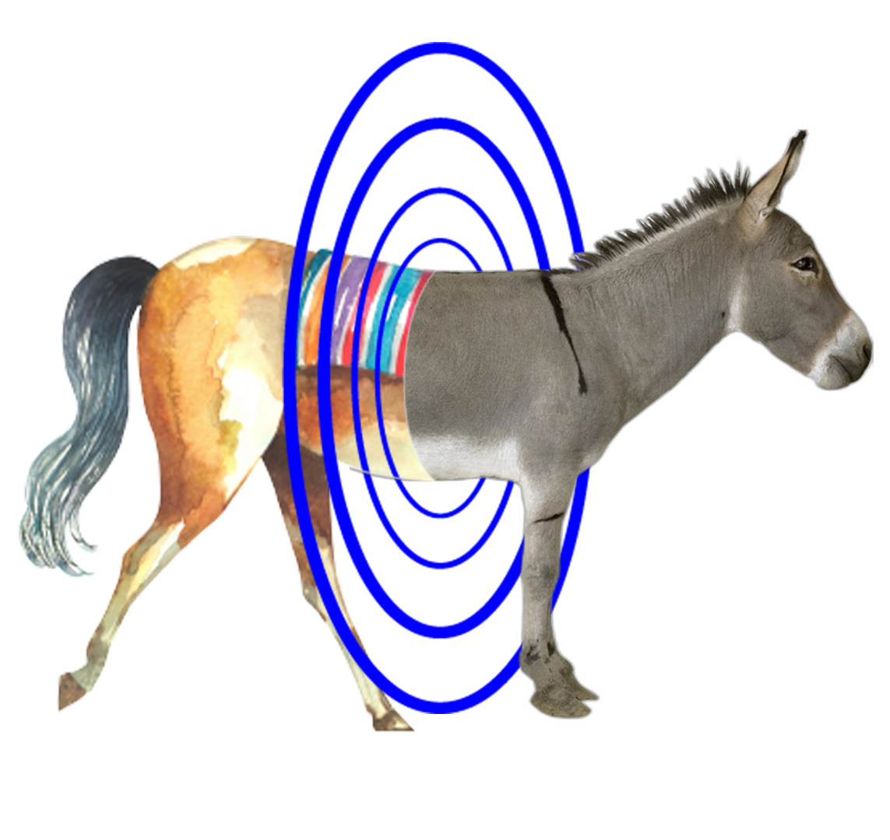
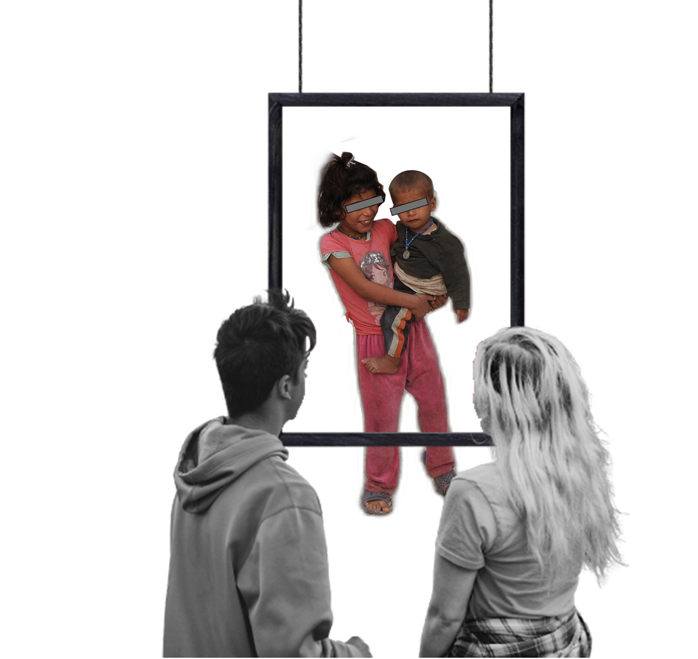
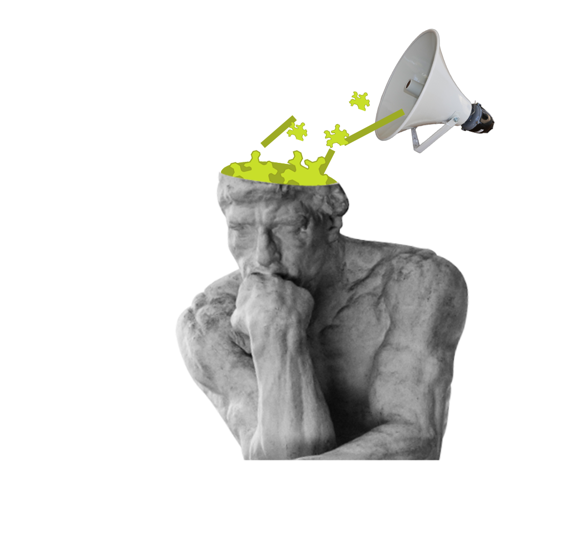

To every creator...
Are you feeling overwhelmed by the sheer volume of uninspired creations merely chasing after trends?
in the pursuit of popularity, too often we see the unique essence of what art truly represents
being overshadowed by works that lack depth and purpose—
what I like to call "artistic waste". It's time to ask ourselves: Are we content to churn out content that will be forgotten tomorrow, or do we strive for something more meaningful?
1THEY ARE COMMODITIES OF
CONSUMERISM
Capitalism caters to the masses' lower tastes in the pursuit of maximum profit.
2THEY ARE TOOLS OF
EXPLOITATION
Some works exploit minorities to attract attention, sacrificing respect under the guise of artistic freedom.
3THEY ARE FRAGMENTS OF
MISINFORMATION
Sensationalist headlines and oversimplified perspectives distort worldviews, depriving people of the ability to think independently and appreciate art correctly.
They're polluting our
mental ecosystem like spreading seaweed.
Our mission:
Our mission:
Ameliorate the bad psychology of society
by corrupting the art trash of contributed
as creator role
Ameliorate the bad psychology of society
by corrupting the art trash of contributed
as creator role
We have
Psychological impacts
The time spent watching an art trash episode:
Could be used to read:
30-50 pages of a world famous bookCould be used to appreciate:
40 famous paintings Could be used to listen:
10 pieces of music
the proliferation of 'Artistic Rubbish.' This term refers not to literal refuse, but to the surge of superficial works
created to cater to base market tastes, lacking in depth and innovation. They encroach upon the space meant for true artistic expression, stifling genuine creativity.
Cumulative contribution focus :7,000 pages - equivalent to 100 copies of One Hundred Years of Solitude4000 paintings - equivalent to an entire French museum1000 songs-equivalent to 90 symphony concerts
Brain wave detection during seaweed meditation:
Can induce higher
Gamma oscillations and
phase synchronization
Research has shown that these
are associated with psycho-cognitive
processes of attention, working memory, learning or
conscious perception.
Getting the psychosocial
back on track :
+Meditation through transplanted seaweed+Shielding Art Trash Through Wearable Devices+You're on board.
Want to donate some?

 Our mission:
Our mission: